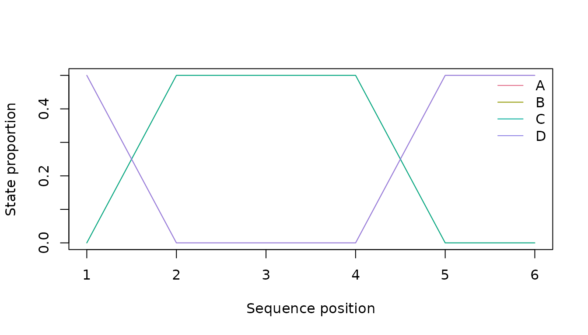
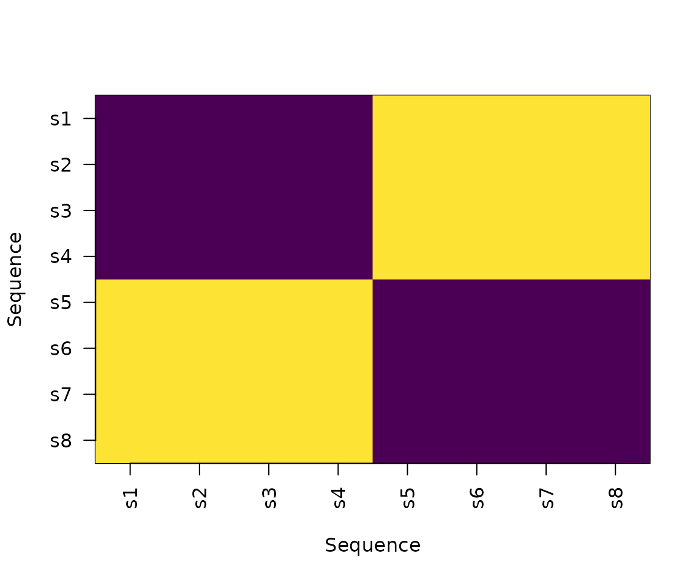
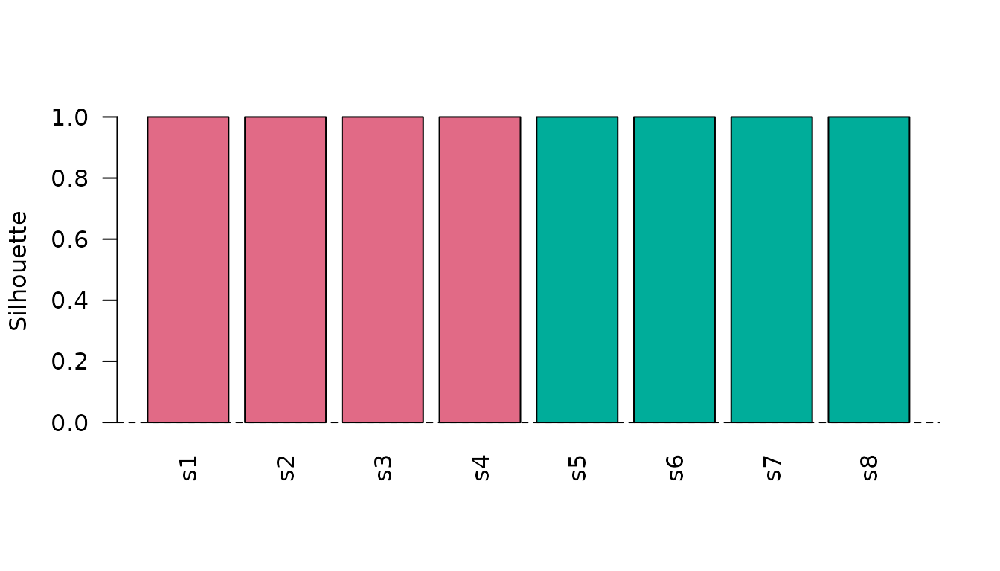
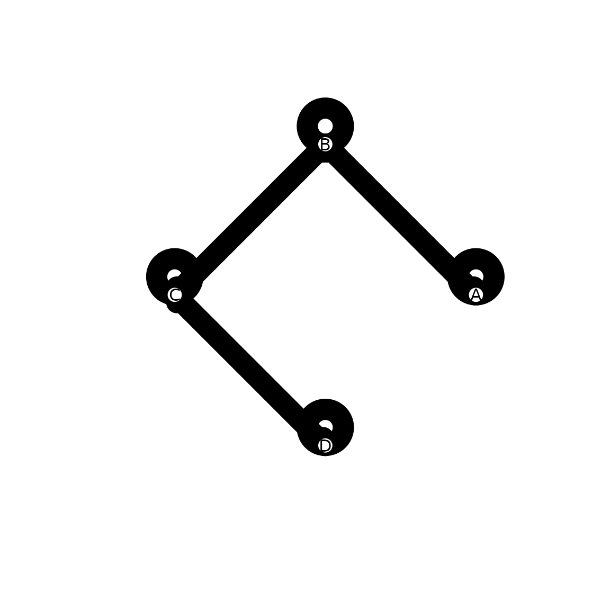

Extended Sequence Visualisations
Source:vignettes/extended-sequence-visualisations.Rmd
extended-sequence-visualisations.RmdSynthetic data
data <- data.frame(
sequence_id = rep(paste0("s", 1:8), each = 6L),
sequence_order = rep(1:6, times = 8L),
state = c(
rep(c("A", "B", "B", "C", "D", "D"), 4L),
rep(c("D", "C", "C", "B", "A", "A"), 4L)
),
stringsAsFactors = FALSE
)
distance <- compute_sequence_distance(data, method = "levenshtein")
clustering <- cluster_sequences(distance, k = 2L, method = "hierarchical")
network <- create_transition_network(data)State distribution and entropy

plot_sequence_entropy(data)Entropy is a structural diversity summary at each aligned position. It is not a measure of participant uncertainty or cognition.
Distance and clustering diagnostics
plot_sequence_distance_heatmap(distance)
plot_sequence_cluster_silhouette(clustering, distance)
Transition network
plot_transition_network(network)
These base-R plots are intentionally focused on package-native audited objects. They complement, rather than replace, specialist visualisation ecosystems.